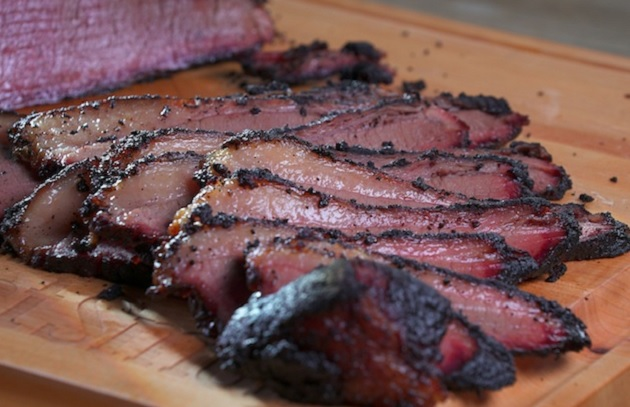
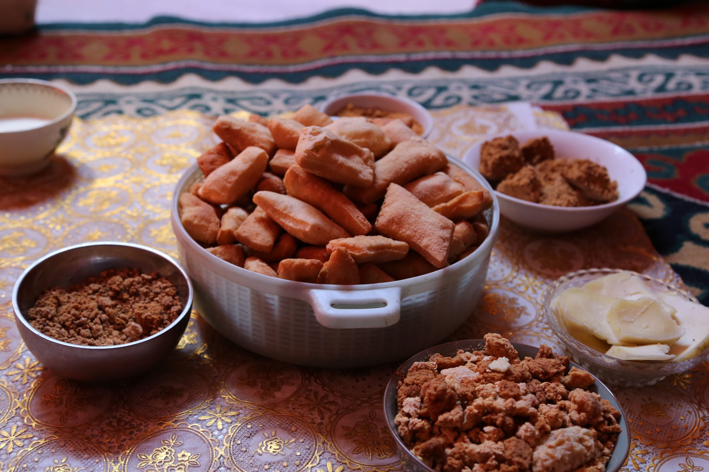
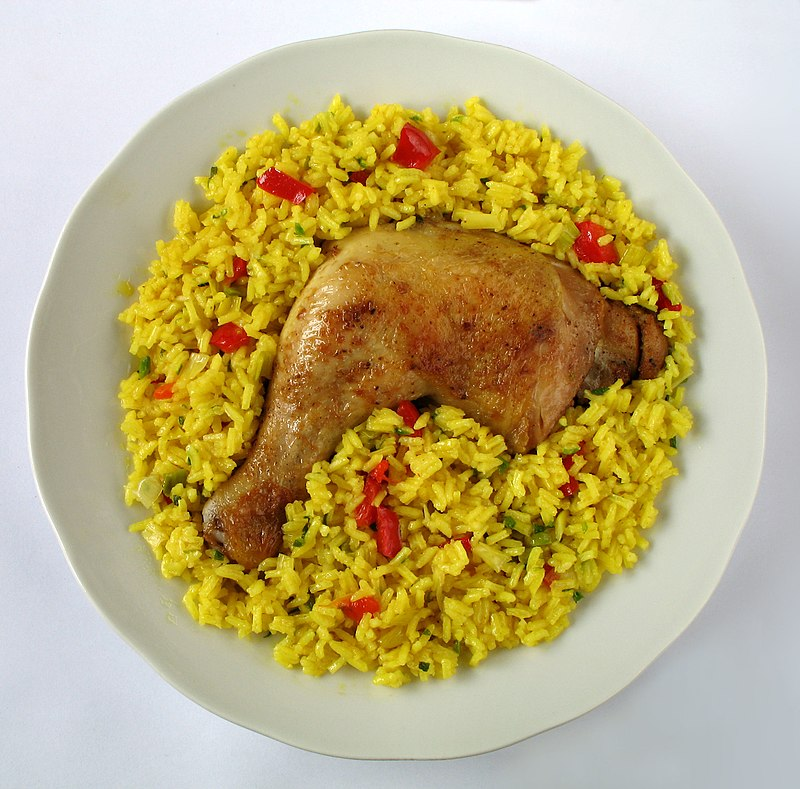
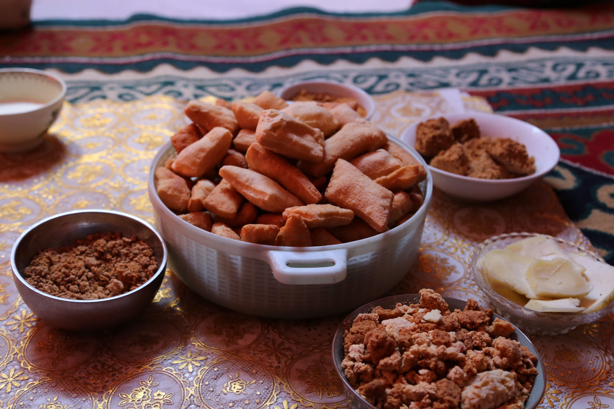
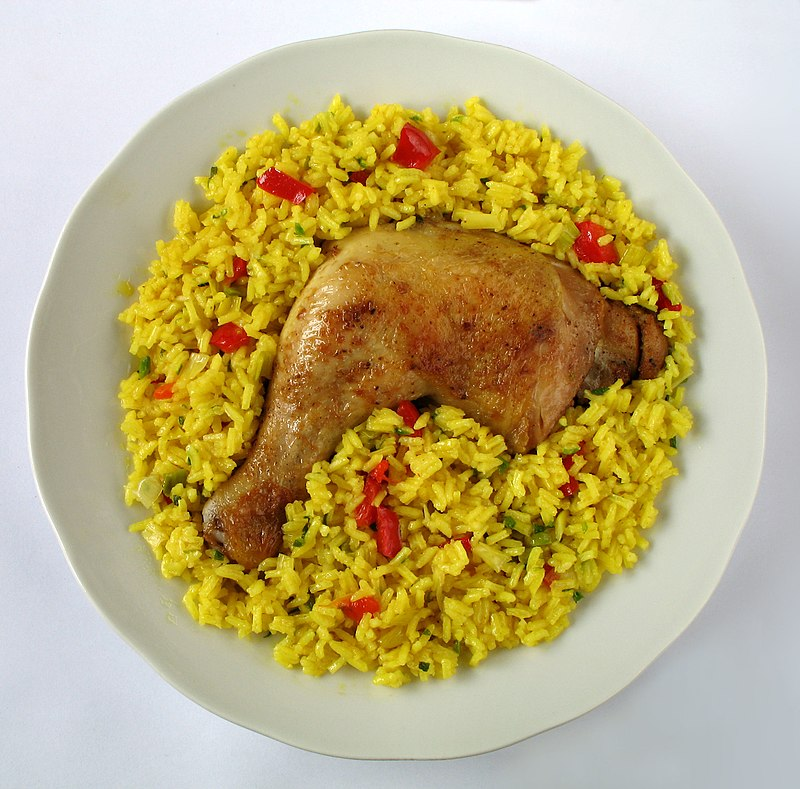
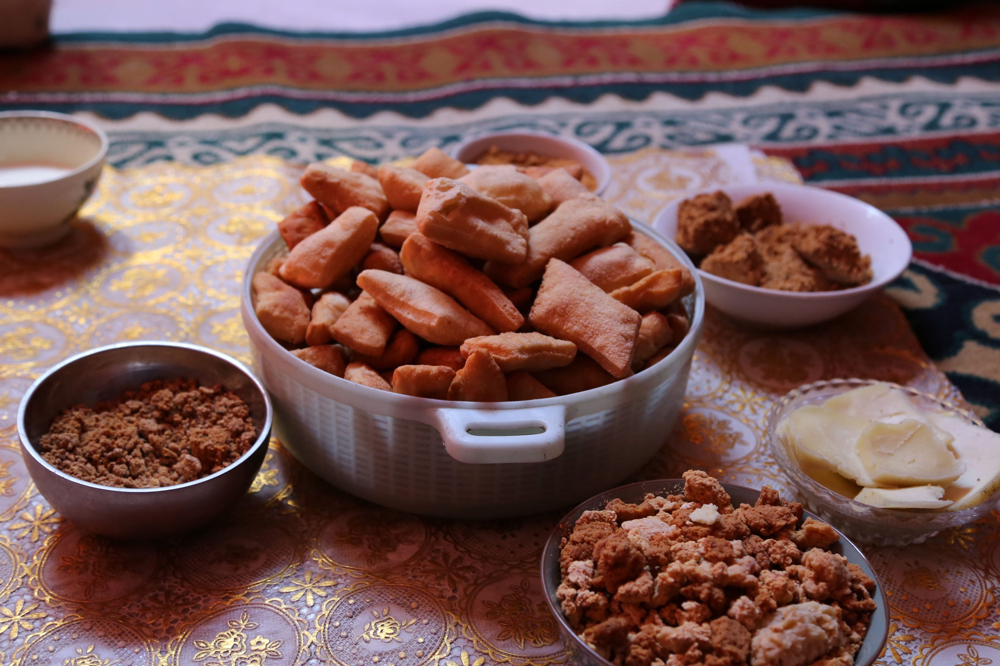
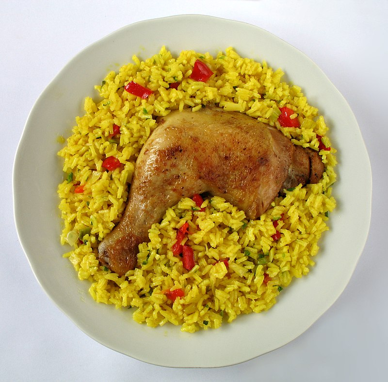

Home
Culinary Chronicles: Showcasing the Best Food in the World
A website by: Jordan Biehl
These are my top 7 cuisines
American BBQ
Mexican
Chineese
Italian
Mongolian
French
Cuban
Who wouldn't love this food?

 
Recipes
Brisket
Enchiladas
General Tso Chicken
Spaghetti
Boortsog
Croissants
Arroz con Pollo


 


